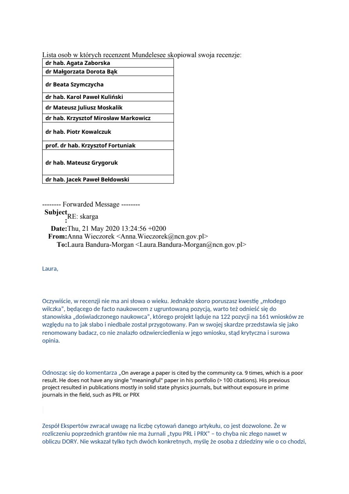

Nagranie 5 — 10 października 2020: Laura o chęci odejścia z NCN
Nagranie z 10 października 2020 r. — Laura Bandura-Morgan w rozmowie z dr. Kilarskim opowiada o swojej decyzji o odejściu z Narodowego Centrum Nauki. Wyjaśnia atmosferę w NCN po ultimatum Błockiego i narastający nacisk ze strony dyrekcji.
Laura opisuje zarówno konsekwencje, jakie spadły na nią po ujawnieniu szantażu, jak i wewnętrzne procedury NCN wobec osób, które nie chcą milczeć. Rozmowa dokumentuje też, że Laura wprost mówi o zamiarze odejścia — co potem zostanie potwierdzone e-mailami NCN z przełomu 2020/2021.
Recording 5 — 10 October 2020: Laura on wanting to leave NCN
Recording from 10 October 2020 — Laura Bandura-Morgan, speaking with Dr. Kilarski, describes her decision to leave Poland's National Science Centre. She explains the atmosphere inside NCN after Błocki's ultimatum and the growing pressure from management.
Laura describes both the consequences that befell her after exposing the blackmail and NCN's internal procedures against those who refuse to stay silent. The conversation also documents her explicit statement that she intends to leave — which is later confirmed by NCN emails from the turn of 2020/2021.
Enregistrement 5 — 10 octobre 2020 : Laura veut quitter le NCN
Enregistrement du 10 octobre 2020 — Laura Bandura-Morgan, dans une conversation avec le Dr Kilarski, évoque sa décision de quitter le Centre national des sciences de Pologne. Elle décrit l'atmosphère au sein du NCN après l'ultimatum de Błocki et la pression croissante de la direction.
Laura raconte à la fois les conséquences qu'elle a subies après avoir révélé le chantage et les procédures internes du NCN contre ceux qui refusent de se taire. La conversation documente également son intention explicite de partir — confirmée plus tard par des e-mails du NCN fin 2020/début 2021.
Aufnahme 5 — 10. Oktober 2020: Laura will das NCN verlassen
Aufnahme vom 10. Oktober 2020 — Laura Bandura-Morgan berichtet im Gespräch mit Dr. Kilarski über ihre Entscheidung, das Nationale Wissenschaftszentrum Polens zu verlassen. Sie schildert die Stimmung im NCN nach Błockis Ultimatum und den wachsenden Druck der Leitung.
Laura beschreibt sowohl die Folgen, die sie nach der Aufdeckung der Erpressung zu tragen hatte, als auch die internen Verfahren des NCN gegen Personen, die nicht schweigen wollen. Das Gespräch dokumentiert außerdem, dass Laura ausdrücklich ihre Abgangsabsicht erklärt — was später durch NCN-E-Mails aus der Jahreswende 2020/2021 bestätigt wird.
Запис 5 — 10 жовтня 2020: Лаура про бажання піти з NCN
Запис від 10 жовтня 2020 р. — Лаура Бандура-Морган у розмові з д-ром Кіларським розповідає про своє рішення піти з Національного наукового центру Польщі. Вона описує атмосферу в NCN після ультиматуму Блоцкого та зростаючий тиск з боку керівництва.
Лаура розповідає як про наслідки, що спіткали її після розкриття шантажу, так і про внутрішні процедури NCN щодо тих, хто не хоче мовчати. Розмова також документує її прямі слова про намір звільнитися — що пізніше буде підтверджено листами NCN кінця 2020 — початку 2021 рр.
Nagranie 6 — 28 sierpnia 2020: Laura Bandura-Morgan broni Mudelsee
Nagranie z 28 sierpnia 2020 r. — Laura Bandura-Morgan, jako kierownik Działu Kontroli Grantów NCN, broni eksperta Manfreda Mudelsee przed dr. Kilarskim. Laura tłumaczy mechanizm „kopiuj-wklej" w recenzjach eksperckich i zdradza, że kilku ekspertów NCN kopiuje recenzje pomiędzy różnymi wnioskami grantowymi.
Rozmowa dokumentuje wewnętrzną wiedzę NCN o nieprawidłowościach w systemie ewaluacji grantów — i jednocześnie instytucjonalną zmowę, w ramach której takie praktyki są tolerowane lub usprawiedliwiane. Jest to dowód w tle dla sprawy Mudelsee oraz dla późniejszej odmowy Błockiego (04.12.2020) zbadania zarzutu.
Recording 6 — 28 August 2020: Laura Bandura-Morgan defends Mudelsee
Recording from 28 August 2020 — Laura Bandura-Morgan, Head of NCN's Grants Control Department, defends expert Manfred Mudelsee before Dr. Kilarski. Laura explains the "copy-paste" mechanism in expert reviews and reveals that several NCN experts copy reviews between different grant applications.
The conversation documents NCN's internal awareness of irregularities in the grant evaluation system — and at the same time the institutional complicity under which such practices are tolerated or excused. It provides background evidence for the Mudelsee case and for Błocki's later refusal (4 Dec 2020) to investigate the charge.
Enregistrement 6 — 28 août 2020 : Laura Bandura-Morgan défend Mudelsee
Enregistrement du 28 août 2020 — Laura Bandura-Morgan, cheffe du Département du contrôle des subventions du NCN, défend l'expert Manfred Mudelsee devant le Dr Kilarski. Elle explique le mécanisme du « copier-coller » dans les évaluations d'experts et révèle que plusieurs experts du NCN copient des évaluations entre différentes demandes de subvention.
La conversation documente la connaissance interne du NCN quant aux irrégularités du système d'évaluation des subventions — et la complicité institutionnelle qui tolère ou excuse ces pratiques. Elle sert de contexte pour l'affaire Mudelsee et pour le refus ultérieur de Błocki (4 déc. 2020) d'enquêter.
Aufnahme 6 — 28. August 2020: Laura Bandura-Morgan verteidigt Mudelsee
Aufnahme vom 28. August 2020 — Laura Bandura-Morgan, Leiterin der NCN-Abteilung für Förderkontrolle, verteidigt den Gutachter Manfred Mudelsee gegenüber Dr. Kilarski. Sie erklärt den „Kopieren-Einfügen"-Mechanismus in Expertengutachten und verrät, dass mehrere NCN-Gutachter Rezensionen zwischen verschiedenen Förderanträgen kopieren.
Das Gespräch dokumentiert das interne Wissen des NCN über Unregelmäßigkeiten im Evaluationssystem — und zugleich die institutionelle Mitwisserschaft, unter der solche Praktiken geduldet oder entschuldigt werden. Es liefert den Hintergrund für den Fall Mudelsee und für Błockis spätere Ablehnung (04.12.2020), den Vorwurf zu untersuchen.
Запис 6 — 28 серпня 2020: Лаура Бандура-Морган захищає Мудельзе
Запис від 28 серпня 2020 р. — Лаура Бандура-Морган, керівник Відділу контролю грантів NCN, захищає експерта Манфреда Мудельзе перед д-ром Кіларським. Лаура пояснює механізм «скопіюй-встав» в експертних рецензіях і зізнається, що кілька експертів NCN копіюють рецензії між різними грантовими заявками.
Розмова документує внутрішню обізнаність NCN про порушення в системі оцінки грантів — і водночас інституційну змову, за якої такі практики толеруються або виправдовуються. Це фонові докази для справи Мудельзе та для пізнішої відмови Блоцкого (04.12.2020) розслідувати звинувачення.
Nagranie 7 (20 marca 2021) — jedna rozmowa w dwóch częściach
Nagranie 7 to jedno, kontynuowane nagranie z 20 marca 2021 r., które — ze względów technicznych — zostało zapisane w dwóch plikach (7a i 7b). W trakcie tej rozmowy dr Witold Kilarski przegrywał Laurze Bandurze-Morgan jej własne e-maile z NCN z okresu, gdy kończyła tam pracę.
W rozmowie uczestniczyła również Jolanta Kilarska („Jola") — małżonka dr. Kilarskiego. Trójstronny charakter rozmowy pozwala prześledzić, jak Laura reaguje na konfrontację z własnymi mailami i jak komentuje działania dyrekcji NCN (Błocki, Drąg, Mudelsee) już z perspektywy byłej pracownicy Centrum.
Uwaga: część A (plik mniejszy) to początek rozmowy; część B (plik większy) to bezpośrednia kontynuacja. Aby zachować ciągłość i kontekst wypowiedzi, zalecamy odsłuchanie obu plików w kolejności A → B.
Wersja audio: Aktualna wersja tego nagrania (7a + 7b) została zastąpiona wersją z głównego folderu oryginałów — o wyższej jakości dźwięku niż pierwotnie opublikowana.
Recording 7 (20 March 2021) — one conversation in two parts
Recording 7 is one continuous conversation from 20 March 2021, saved — for technical reasons — in two files (7a and 7b). During this conversation Dr. Witold Kilarski played back to Laura Bandura-Morgan her own NCN emails from the period when she was leaving NCN.
Jolanta Kilarska ("Jola") — Dr. Kilarski's spouse — also took part in the conversation. The three-way nature of the exchange allows one to follow how Laura reacts when confronted with her own emails and how she comments on the actions of NCN's management (Błocki, Drąg, Mudelsee) from the perspective of a former NCN employee.
Note: Part A (the smaller file) is the beginning of the conversation; Part B (the larger file) is its direct continuation. For continuity and context, we recommend listening to both files in A → B order.
Audio version: The current version of this recording (7a + 7b) has been replaced with the version from the main folder of originals — higher-quality audio than the one originally published.
Enregistrement 7 (20 mars 2021) — une conversation en deux parties
L'enregistrement 7 est une seule et même conversation continue du 20 mars 2021, enregistrée — pour des raisons techniques — dans deux fichiers (7a et 7b). Au cours de cette conversation, le Dr Witold Kilarski a fait écouter à Laura Bandura-Morgan ses propres e-mails du NCN datant de la période où elle quittait le NCN.
Jolanta Kilarska (« Jola ») — épouse du Dr Kilarski — a également participé à la conversation. Le caractère tripartite de l'échange permet de suivre la réaction de Laura lorsqu'elle est confrontée à ses propres e-mails et ses commentaires sur les actions de la direction du NCN (Błocki, Drąg, Mudelsee) depuis la perspective d'une ancienne employée.
Remarque : la partie A (fichier plus petit) est le début de la conversation ; la partie B (fichier plus grand) en est la suite directe. Pour la continuité et le contexte, nous recommandons d'écouter les deux fichiers dans l'ordre A → B.
Version audio : La version actuelle de cet enregistrement (7a + 7b) a été remplacée par la version issue du dossier principal des originaux — de meilleure qualité sonore que celle initialement publiée.
Aufnahme 7 (20. März 2021) — ein Gespräch in zwei Teilen
Aufnahme 7 ist ein einziges, fortlaufendes Gespräch vom 20. März 2021, das — aus technischen Gründen — in zwei Dateien gespeichert wurde (7a und 7b). Während dieses Gesprächs spielte Dr. Witold Kilarski Laura Bandura-Morgan ihre eigenen NCN-E-Mails aus der Zeit vor, als sie das NCN verließ.
An dem Gespräch nahm außerdem Jolanta Kilarska („Jola") — die Ehefrau von Dr. Kilarski — teil. Der dreiseitige Charakter des Austauschs ermöglicht es nachzuvollziehen, wie Laura auf die Konfrontation mit ihren eigenen E-Mails reagiert und wie sie — nun als ehemalige NCN-Mitarbeiterin — die Handlungen der NCN-Leitung (Błocki, Drąg, Mudelsee) kommentiert.
Hinweis: Teil A (die kleinere Datei) ist der Anfang des Gesprächs; Teil B (die größere Datei) ist seine unmittelbare Fortsetzung. Für Kontinuität und Kontext empfehlen wir, beide Dateien in der Reihenfolge A → B anzuhören.
Audio-Version: Die aktuelle Version dieser Aufnahme (7a + 7b) wurde durch die Version aus dem Hauptordner der Originale ersetzt — mit besserer Tonqualität als die ursprünglich veröffentlichte.
Запис 7 (20 березня 2021) — одна розмова у двох частинах
Запис 7 — це одна безперервна розмова від 20 березня 2021 р., яка — з технічних причин — була збережена у двох файлах (7a і 7b). Під час цієї розмови д-р Вітольд Кіларський відтворював Лаурі Бандурі-Морган її власні листи з NCN із періоду, коли вона завершувала роботу в NCN.
У розмові також брала участь Йоланта Кіларська («Йоля») — дружина д-ра Кіларського. Трьохсторонній характер обміну дозволяє простежити, як Лаура реагує на конфронтацію зі своїми власними листами та як коментує дії керівництва NCN (Блоцкі, Дронг, Мудельзе) вже з позиції колишньої співробітниці.
Примітка: частина A (менший файл) — початок розмови; частина B (більший файл) — її безпосереднє продовження. Для збереження неперервності та контексту рекомендуємо слухати обидва файли по черзі A → B.
Аудіоверсія: Поточна версія цього запису (7a + 7b) замінена версією з головної теки оригіналів — вищої якості звуку, ніж опублікована раніше.
Nagranie 10 — 30 września 2021: mechanizm zniszczenia Witolda
Nagranie z 30 września 2021 r. (godz. 11:49) — Laura Bandura-Morgan opowiada, jaki mógł być mechanizm zniszczenia dr. Witolda Kilarskiego przez dyrektora NCN Zbigniewa Błockiego i prof. Marcina Drąga. Jest to późne, zbiorcze spojrzenie Laury — już po odejściu z NCN — na cały proces: od ultimatum z 29 maja 2020 r. aż po wykluczenie Kilarskiego ze środowiska naukowego.
Laura rekonstruuje konkretne kroki: wpływ Drąga na decyzje NCN, wykorzystanie pozycji Błockiego do zamknięcia niezależnym osobom dostępu do grantów, oraz rolę represji procesowych (sądy, pozwy cywilne, wyroki). Nagranie jest jednym z najważniejszych podsumowań sprawy z ust osoby, która była wewnątrz aparatu.
Recording 10 — 30 September 2021: the mechanism of Witold's destruction
Recording from 30 September 2021 (11:49) — Laura Bandura-Morgan explains what the mechanism of Dr. Witold Kilarski's destruction by NCN Director Zbigniew Błocki and Prof. Marcin Drąg may have been. It is a late, summarising view from Laura — already a former NCN employee — covering the whole process: from the 29 May 2020 ultimatum to Kilarski's exclusion from academia.
Laura reconstructs specific steps: Drąg's influence on NCN decisions, Błocki's use of his position to close off grant access to independent voices, and the role of procedural reprisals (courts, civil lawsuits, verdicts). It is one of the most important summaries of the case delivered by someone who was inside the apparatus.
Enregistrement 10 — 30 septembre 2021 : le mécanisme de destruction de Witold
Enregistrement du 30 septembre 2021 (11h49) — Laura Bandura-Morgan expose ce qu'aurait pu être le mécanisme de destruction du Dr Witold Kilarski par le directeur du NCN Zbigniew Błocki et le Prof. Marcin Drąg. C'est une vue tardive et synthétique de Laura — désormais ancienne employée du NCN — sur tout le processus : de l'ultimatum du 29 mai 2020 à l'exclusion de Kilarski du monde académique.
Laura reconstruit les étapes concrètes : l'influence de Drąg sur les décisions du NCN, l'usage par Błocki de sa position pour couper l'accès aux subventions aux voix indépendantes, et le rôle des représailles procédurales (tribunaux, procès civils, verdicts). C'est l'une des synthèses les plus importantes de l'affaire venant de l'intérieur de l'appareil.
Aufnahme 10 — 30. September 2021: der Mechanismus der Zerstörung Witolds
Aufnahme vom 30. September 2021 (11:49) — Laura Bandura-Morgan erläutert, wie der Mechanismus der Zerstörung von Dr. Witold Kilarski durch NCN-Direktor Zbigniew Błocki und Prof. Marcin Drąg ausgesehen haben könnte. Es ist eine späte, zusammenfassende Sicht Lauras — bereits als ehemalige NCN-Mitarbeiterin — auf den gesamten Prozess: vom Ultimatum am 29. Mai 2020 bis zur Verdrängung Kilarskis aus der Wissenschaft.
Laura rekonstruiert konkrete Schritte: Drągs Einfluss auf NCN-Entscheidungen, Błockis Nutzung seiner Position, um unabhängigen Stimmen den Zugang zu Fördermitteln zu verschließen, und die Rolle verfahrensrechtlicher Repressalien (Gerichte, Zivilklagen, Urteile). Es ist eine der wichtigsten Zusammenfassungen des Falls aus dem Inneren des Apparats.
Запис 10 — 30 вересня 2021: механізм знищення Вітольда
Запис від 30 вересня 2021 р. (11:49) — Лаура Бандура-Морган розповідає, яким міг бути механізм знищення д-ра Вітольда Кіларського директором NCN Збігнєвом Блоцкім і проф. Марціном Дрогом. Це пізніший, узагальнюючий погляд Лаури — вже колишньої співробітниці NCN — на весь процес: від ультиматуму 29 травня 2020 р. до витіснення Кіларського з наукового середовища.
Лаура реконструює конкретні кроки: вплив Дрога на рішення NCN, використання Блоцкім своєї посади, щоб закрити незалежним голосам доступ до грантів, і роль процесуальних репресій (суди, цивільні позови, вироки). Це одне з найважливіших узагальнень справи з вуст особи, яка була всередині апарату.
Ukarany sygnalista, nie skorumpowani urzędnicy
Zamiast ścigać korupcję, polski wymiar sprawiedliwości obrócił się przeciwko sygnaliście.
The whistleblower punished, not the corrupt officials
Instead of prosecuting corruption, Poland's justice system turned against the whistleblower.
Le lanceur d'alerte puni, pas les fonctionnaires corrompus
Au lieu de poursuivre la corruption, le système judiciaire polonais s'est retourné contre le lanceur d'alerte.
Der Whistleblower bestraft, nicht die korrupten Beamten
Anstatt Korruption zu verfolgen, wandte sich das polnische Justizsystem gegen den Whistleblower.
Покараний викривач, а не корумповані чиновники
Замість переслідування корупції, польська система правосуддя обернулася проти викривача.
Kluczowe dowody
Poniżej znajdują się dokumenty potwierdzające korupcję w NCN. Ultimatum e-mailowe od Laury Bandury-Morgan jest kluczowym dowodem w sprawie.
- 2.
 Chronologiczna korespondencja mailowa Kilarski-Błocki-Drąg-Bandura (2020-2021)DOCX
Chronologiczna korespondencja mailowa Kilarski-Błocki-Drąg-Bandura (2020-2021)DOCX - 3.
 Kompletna analiza 10 nagrań audio — dowody szantażu i korupcji w NCNDOCX
Kompletna analiza 10 nagrań audio — dowody szantażu i korupcji w NCNDOCX - 4.
 Apelacja od wyroku II K 321/23/P (NCN/Błocki vs. Kilarski)DOCX
Apelacja od wyroku II K 321/23/P (NCN/Błocki vs. Kilarski)DOCX - 5.
 Uzupełnienie apelacji od wyroku Sądu Okręgowego z 15 listopada 2024DOCX
Uzupełnienie apelacji od wyroku Sądu Okręgowego z 15 listopada 2024DOCX - 6.
 Wnioski procesowe — apelacjaDOCX
Wnioski procesowe — apelacjaDOCX - 7.
 Analiza powiązań: Babik, Liana, Zwonek, Błocki — nepotyzm w NCNDOCX
Analiza powiązań: Babik, Liana, Zwonek, Błocki — nepotyzm w NCNDOCX - 8.
 Załącznik do zawiadomienia do prokuraturyDOCX
Załącznik do zawiadomienia do prokuraturyDOCX - 9.
 Postanowienie Prokuratury — odmowa wszczęcia śledztwa (Ochońska-Wróbel)PDF
Postanowienie Prokuratury — odmowa wszczęcia śledztwa (Ochońska-Wróbel)PDF - 10.
 Wyrok w sprawie Laura B-M vs. Kilarski (sędzia Chmielarz)PDF
Wyrok w sprawie Laura B-M vs. Kilarski (sędzia Chmielarz)PDF - 12.
 CV i lista publikacji naukowych dr. Witolda KilarskiegoDOCX
CV i lista publikacji naukowych dr. Witolda KilarskiegoDOCX
Kluczowy dowód w całej sprawie. E-mail Laury Bandury-Morgan — kierownika Działu Kontroli Grantów NCN — wysłany 1 czerwca 2020 r. z oficjalnego, służbowego konta NCN. Dokument przekazuje dr. Kilarskiemu ultimatum wystosowane przez dyrektora NCN Zbigniewa Błockiego: wycofaj wniosek NAWA „Polskie Powroty" — bo i tak go nie dostaniesz — aby „uspokoić prof. Drąga".
Znaczenie dowodowe: potwierdza istnienie ultimatum w formie pisemnej, z oficjalnego konta NCN. Instytucja zarządzająca konkursami NCN ingeruje w niezależny konkurs NAWA — co wykracza poza kompetencje obu agencji.
Pełna chronologiczna rekonstrukcja korespondencji e-mailowej między dr. Kilarskim, Błockim, prof. Drągiem oraz Laurą Bandurą-Morgan w latach 2020–2021.
Dokument pokazuje sekwencję zdarzeń i reakcje poszczególnych uczestników na ultimatum oraz późniejsze próby wyciszenia sprawy. Użyteczny do śledzenia, kto i kiedy wiedział.
Kompletna analiza 10 nagrań audio (2020–2021): transkrypcje, kontekst i powiązania między wątkami szantażu, nepotyzmu i sfałszowanych recenzji.
Dokument ujednolica wszystkie nagrania w jeden zestaw dowodów, z przypisami do konkretnych fragmentów czasowych. Jest przewodnikiem po materiale audio dla śledczych i dziennikarzy.
Apelacja dr. Kilarskiego od wyroku sądu pierwszej instancji w sprawie II K 321/23/P — sprawa cywilna wniesiona przez NCN/Błockiego przeciwko sygnaliście.
W apelacji wskazano naruszenia prawa procesowego oraz nieuwzględnienie dowodów audio i e-mailowych potwierdzających szantaż.
Uzupełnienie apelacji od wyroku Sądu Okręgowego w Krakowie z 15 listopada 2024 r. (skład z udziałem sędzi Anny Chmielarz).
W uzupełnieniu wskazano kluczowe dowody pominięte przez sąd pierwszej instancji oraz błędy w ocenie materiału dowodowego.
Wnioski procesowe zgłoszone w postępowaniu apelacyjnym — formalne żądania dopuszczenia i przeprowadzenia dowodów.
Dokument istotny dla oceny, czy sądy apelacyjne umożliwiły rzeczywiste badanie materiału dowodowego, czy też ograniczyły jego zakres.
Analiza powiązań kadrowo-biznesowych: Babik, Liana, Zwonek, Błocki — mapa nepotyzmu w NCN i środowisku Uniwersytetu Jagiellońskiego.
Dokument pokazuje, jak stanowiska w NCN, UJ i zewnętrznych spółkach tworzyły siatkę wzajemnych zależności, wpływającą na decyzje grantowe.
Załącznik do zawiadomienia dr. Kilarskiego do prokuratury — zestaw dokumentów i nagrań przekazanych wraz z zawiadomieniem o podejrzeniu popełnienia przestępstwa.
Zawartość załącznika dokumentuje, że prokuratura otrzymała materiał dowodowy pozwalający na merytoryczne wszczęcie postępowania.
Postanowienie prokuratury w Krakowie (sygn. 4135-1.Ds.96.2022) — prokurator Ochońska-Wróbel odmawia wszczęcia śledztwa w sprawie ultimatum i działań dyrekcji NCN.
Decyzja ta — wraz z późniejszym postanowieniem prokurator Berus (2026) — stała się pierwszym formalnym dowodem bezczynności organów ścigania w sprawie Kilarskiego.
Wyrok w sprawie Laura Bandura-Morgan vs. dr Kilarski — ogłoszony przez skład z udziałem sędzi Anny Chmielarz.
Wyrok dotyczy publikacji Kilarskiego opisującej szantaż; sąd pominął w uzasadnieniu nagrania audio Laury z 2020–2021 r.
Dokument wycofany z publicznej wersji do anonimizacji. Argumentacja autora pozostaje dostępna w innych dokumentach procesowych — bez danych szczególnych.
Dokument podnoszony przez stronę przeciwną w celu podważenia wiarygodności sygnalisty; pokazuje jeden ze standardowych mechanizmów represji wobec whistleblowerów.
CV i lista publikacji naukowych dr. Witolda Kilarskiego — dowód dorobku badawczego w dziedzinach układu limfatycznego, inżynierii biomedycznej i terapii cukrzycy typu 1.
Materiał referencyjny dla mediów i instytucji oceniających wiarygodność merytoryczną sygnalisty.
Key Evidence
Below are documents supporting the case of corruption at NCN. The ultimatum email from Laura Bandura-Morgan is the central piece of evidence.
- 2.Chronological email correspondence Kilarski-Błocki-Drąg-Bandura (2020-2021)DOCX
- 3.Complete analysis of 10 audio recordings — evidence of blackmail and corruption at NCNDOCX
- 4.Appeal against verdict II K 321/23/P (NCN/Błocki vs. Kilarski)DOCX
- 5.Supplementary appeal against Kraków District Court verdict of 15 November 2024DOCX
- 6.Procedural motions — appealDOCX
- 7.Analysis of connections: Babik, Liana, Zwonek, Błocki — nepotism at NCNDOCX
- 8.Attachment to criminal complaint filed with prosecutorDOCX
- 9.Prosecutor's decision — refusal to investigate (Ochońska-Wróbel)PDF
- 10.Verdict in Laura B-M vs. Kilarski case (Judge Chmielarz)PDF
- 12.CV and list of scientific publications of Dr. Witold KilarskiDOCX
The central piece of evidence in the entire case. An email from Laura Bandura-Morgan — Head of NCN's Grants Control Department — sent on 1 June 2020 from an official NCN work account. The document conveys to Dr. Kilarski the ultimatum issued by NCN Director Zbigniew Błocki: withdraw the NAWA "Polish Returns" application — you won't get it anyway — in order to "placate Prof. Drąg".
Evidentiary value: confirms the ultimatum in writing, from an official NCN account. The body managing NCN's grant competitions is interfering with an independent NAWA competition — outside the lawful remit of both agencies.
A complete chronological reconstruction of email correspondence between Dr. Kilarski, Błocki, Prof. Drąg and Laura Bandura-Morgan across 2020–2021.
The document shows the sequence of events and the reactions of each participant to the ultimatum and the subsequent attempts to bury the case. Useful for tracking who knew what and when.
A complete analysis of the 10 audio recordings (2020–2021): transcripts, context, and connections between the threads of blackmail, nepotism and falsified reviews.
The document consolidates all the recordings into a single evidence set, with references to specific time fragments. It is a guide through the audio material for investigators and journalists.
Dr. Kilarski's appeal against the first-instance verdict in case II K 321/23/P — a civil case brought by NCN/Błocki against the whistleblower.
The appeal identifies breaches of procedural law and the court's failure to consider audio and email evidence confirming the blackmail.
Supplementary appeal against the Kraków Regional Court verdict of 15 November 2024 (panel including Judge Anna Chmielarz).
The supplementary submission identifies key evidence overlooked by the first instance and errors in the assessment of the evidentiary record.
Procedural motions filed in the appellate proceedings — formal requests for the admission and examination of evidence.
A document crucial for assessing whether the appellate courts allowed a genuine examination of the evidence or limited its scope.
An analysis of personnel and business links: Babik, Liana, Zwonek, Błocki — a map of nepotism at NCN and in the Jagiellonian University milieu.
The document shows how positions at NCN, UJ and in external companies formed a web of mutual dependency that influenced grant decisions.
Attachment to Dr. Kilarski's criminal complaint — a set of documents and recordings submitted with the notice of suspected offence.
The contents of the attachment document that the prosecutor received evidence sufficient to open a substantive investigation.
Decision of the Kraków prosecutor's office (file no. 4135-1.Ds.96.2022) — Prosecutor Ochońska-Wróbel refuses to open an investigation into the ultimatum and NCN management's conduct.
This decision — together with Prosecutor Berus's later ruling (2026) — became the first formal evidence of law-enforcement inaction in the Kilarski case.
Verdict in the case Laura Bandura-Morgan vs. Dr. Kilarski — delivered by a panel including Judge Anna Chmielarz.
The verdict concerns Kilarski's publication describing the blackmail; the court's reasoning omitted the Laura audio recordings from 2020–2021.
Document withdrawn from the public version pending anonymisation. The author's argument remains available in other procedural documents — without special-category personal data.
The document is raised by the opposing side to undermine the whistleblower's credibility; it illustrates one of the standard retaliation mechanisms against whistleblowers.
CV and list of scientific publications of Dr. Witold Kilarski — evidence of his research record in lymphatic system biology, biomedical engineering and Type 1 diabetes therapy.
Reference material for media and institutions assessing the substantive credibility of the whistleblower.
Preuves clés
Ci-dessous les documents attestant de la corruption au NCN. L'e-mail d'ultimatum de Laura Bandura-Morgan constitue la pièce centrale.
- 2.Correspondance chronologique Kilarski-Błocki-Drąg-Bandura (2020-2021)DOCX
- 3.Analyse complète de 10 enregistrements audio — preuves de chantage et corruption au NCNDOCX
- 4.Appel du verdict II K 321/23/P (NCN/Błocki c. Kilarski)DOCX
- 5.Complément d'appel contre le verdict du tribunal régional du 15 novembre 2024DOCX
- 6.Conclusions de procédure — appelDOCX
- 7.Analyse des liens : Babik, Liana, Zwonek, Błocki — népotisme au NCNDOCX
- 8.Pièce jointe à la plainte pénale déposée au parquetDOCX
- 9.Décision du procureur — refus d'enquête (Ochońska-Wróbel)PDF
- 10.Verdict Laura B-M c. Kilarski (juge Chmielarz)PDF
- 12.CV et liste de publications du Dr Witold KilarskiDOCX
La pièce à conviction centrale de l'affaire. Un e-mail de Laura Bandura-Morgan — cheffe du Département du contrôle des subventions du NCN — envoyé le 1er juin 2020 depuis un compte officiel de service du NCN. Le document transmet au Dr Kilarski l'ultimatum émis par le directeur du NCN Zbigniew Błocki : retirer la demande NAWA « Retours polonais » — que vous n'obtiendrez de toute façon pas — pour « apaiser le prof. Drąg ».
Valeur probante : confirme l'ultimatum par écrit, depuis un compte officiel du NCN. L'organe gérant les concours du NCN interfère avec un concours indépendant de la NAWA — ce qui dépasse le mandat légal des deux agences.
Reconstitution chronologique complète de la correspondance par e-mail entre le Dr Kilarski, Błocki, le Prof. Drąg et Laura Bandura-Morgan au cours de 2020–2021.
Le document montre la séquence des événements et les réactions de chaque participant à l'ultimatum et aux tentatives ultérieures d'étouffer l'affaire. Utile pour suivre qui savait quoi et quand.
Analyse complète des 10 enregistrements audio (2020–2021) : transcriptions, contexte et liens entre les fils du chantage, du népotisme et des évaluations falsifiées.
Le document consolide tous les enregistrements en un seul dossier de preuves, avec des références à des segments temporels précis. C'est un guide du matériel audio pour les enquêteurs et les journalistes.
Appel du Dr Kilarski contre le verdict de première instance dans l'affaire II K 321/23/P — procédure civile engagée par le NCN/Błocki contre le lanceur d'alerte.
L'appel signale des violations du droit procédural et le fait que la juridiction n'a pas pris en compte les preuves audio et les e-mails confirmant le chantage.
Complément d'appel contre le verdict du Tribunal régional de Cracovie du 15 novembre 2024 (formation incluant la juge Anna Chmielarz).
Le complément identifie les preuves clés ignorées par la première instance et les erreurs d'appréciation du dossier.
Conclusions de procédure déposées en appel — demandes formelles d'admission et d'examen des preuves.
Document crucial pour évaluer si les juridictions d'appel ont permis un véritable examen des preuves ou en ont restreint la portée.
Analyse des liens de personnel et d'affaires : Babik, Liana, Zwonek, Błocki — carte du népotisme au NCN et dans le milieu de l'Université Jagellonne.
Le document montre comment des fonctions au NCN, à l'UJ et dans des sociétés extérieures ont formé un réseau d'interdépendances influant sur les décisions de subvention.
Annexe à la plainte pénale du Dr Kilarski — ensemble de documents et d'enregistrements remis avec la dénonciation d'une infraction soupçonnée.
Le contenu de l'annexe documente que le parquet a reçu des preuves permettant d'ouvrir une enquête sur le fond.
Décision du parquet de Cracovie (réf. 4135-1.Ds.96.2022) — la procureure Ochońska-Wróbel refuse d'ouvrir une enquête sur l'ultimatum et la conduite de la direction du NCN.
Cette décision — avec l'ordonnance ultérieure de la procureure Berus (2026) — est devenue la première preuve formelle de l'inaction des autorités dans l'affaire Kilarski.
Verdict dans l'affaire Laura Bandura-Morgan c. Dr Kilarski — rendu par une formation incluant la juge Anna Chmielarz.
Le verdict concerne la publication de Kilarski décrivant le chantage ; la motivation de la cour a omis les enregistrements audio de Laura de 2020–2021.
Document retiré de la version publique en attente d'anonymisation. L'argumentation de l'auteur reste disponible dans d'autres pièces de la procédure — sans données particulières.
Le document est invoqué par la partie adverse pour saper la crédibilité du lanceur d'alerte ; il illustre un mécanisme classique de rétorsion à l'encontre des lanceurs d'alerte.
CV et liste de publications du Dr Witold Kilarski — preuve de son parcours de recherche en biologie du système lymphatique, ingénierie biomédicale et thérapie du diabète de type 1.
Matériel de référence pour les médias et institutions évaluant la crédibilité scientifique du lanceur d'alerte.
Schlüsselbeweise
Nachfolgend die Dokumente, die die Korruption am NCN belegen. Die Ultimatum-E-Mail von Laura Bandura-Morgan ist das zentrale Beweisstück.
- 2.Chronologischer E-Mail-Verkehr Kilarski-Błocki-Drąg-Bandura (2020-2021)DOCX
- 3.Vollständige Analyse der 10 Audioaufnahmen — Beweise für Erpressung und Korruption am NCNDOCX
- 4.Berufung gegen Urteil II K 321/23/P (NCN/Błocki gegen Kilarski)DOCX
- 5.Ergänzung der Berufung gegen das Urteil des Landgerichts Krakau vom 15. November 2024DOCX
- 6.Verfahrensanträge — BerufungDOCX
- 7.Analyse der Verbindungen: Babik, Liana, Zwonek, Błocki — Vetternwirtschaft am NCNDOCX
- 8.Anlage zur Strafanzeige bei der StaatsanwaltschaftDOCX
- 9.Beschluss der Staatsanwaltschaft — Ablehnung der Ermittlung (Ochońska-Wróbel)PDF
- 10.Urteil Laura B-M gegen Kilarski (Richterin Chmielarz)PDF
- 12.Lebenslauf und Publikationsliste von Dr. Witold KilarskiDOCX
Das zentrale Beweisstück des gesamten Falls. Eine E-Mail von Laura Bandura-Morgan — Leiterin der NCN-Abteilung für Förderkontrolle — gesendet am 1. Juni 2020 von einem offiziellen NCN-Dienstkonto. Das Dokument übermittelt Dr. Kilarski das Ultimatum von NCN-Direktor Zbigniew Błocki: Zieh den NAWA-Antrag „Polnische Rückkehr" zurück — du bekommst ihn ohnehin nicht —, um „Prof. Drąg zu beruhigen".
Beweiswert: belegt das Ultimatum schriftlich, von einem offiziellen NCN-Konto. Die für NCN-Förderwettbewerbe zuständige Einrichtung greift in einen unabhängigen NAWA-Wettbewerb ein — außerhalb des gesetzlichen Zuständigkeitsbereichs beider Agenturen.
Eine vollständige chronologische Rekonstruktion des E-Mail-Verkehrs zwischen Dr. Kilarski, Błocki, Prof. Drąg und Laura Bandura-Morgan in den Jahren 2020–2021.
Das Dokument zeigt die Abfolge der Ereignisse und die Reaktionen der Beteiligten auf das Ultimatum sowie die späteren Versuche, den Fall zu vertuschen. Nützlich, um nachzuvollziehen, wer wann was wusste.
Eine vollständige Analyse der 10 Audioaufnahmen (2020–2021): Transkripte, Kontext und Verbindungen zwischen den Strängen Erpressung, Vetternwirtschaft und gefälschte Gutachten.
Das Dokument bündelt alle Aufnahmen zu einem einheitlichen Beweisdossier mit Verweisen auf konkrete Zeitabschnitte. Es dient als Leitfaden durch das Audiomaterial für Ermittler und Journalisten.
Berufung von Dr. Kilarski gegen das erstinstanzliche Urteil im Verfahren II K 321/23/P — ein Zivilverfahren des NCN/Błocki gegen den Whistleblower.
Die Berufung benennt Verstöße gegen das Verfahrensrecht und die Nichtberücksichtigung von Audio- und E-Mail-Beweisen, die die Erpressung belegen.
Ergänzung der Berufung gegen das Urteil des Landgerichts Krakau vom 15. November 2024 (Kammer mit Richterin Anna Chmielarz).
Die Ergänzung benennt die von der ersten Instanz übersehenen Schlüsselbeweise und die Fehler bei der Beweiswürdigung.
Verfahrensanträge im Berufungsverfahren — formelle Anträge auf Zulassung und Beweiserhebung.
Ein Dokument, das entscheidend dafür ist zu beurteilen, ob die Berufungsgerichte eine echte Beweisprüfung ermöglichten oder ihren Umfang beschränkten.
Eine Analyse personeller und geschäftlicher Verflechtungen: Babik, Liana, Zwonek, Błocki — eine Karte der Vetternwirtschaft am NCN und im Umfeld der Jagiellonen-Universität.
Das Dokument zeigt, wie Ämter am NCN, an der UJ und in externen Unternehmen ein Netz gegenseitiger Abhängigkeiten bildeten, das die Förderentscheidungen beeinflusste.
Anlage zur Strafanzeige von Dr. Kilarski — eine Sammlung von Dokumenten und Aufnahmen, die mit der Anzeige eingereicht wurden.
Der Inhalt der Anlage belegt, dass die Staatsanwaltschaft Beweise erhielt, die die Einleitung einer inhaltlichen Ermittlung erlaubten.
Beschluss der Staatsanwaltschaft Krakau (Az. 4135-1.Ds.96.2022) — Staatsanwältin Ochońska-Wróbel lehnt die Einleitung eines Ermittlungsverfahrens zum Ultimatum und zum Verhalten der NCN-Leitung ab.
Dieser Beschluss — zusammen mit der späteren Entscheidung von Staatsanwältin Berus (2026) — wurde zum ersten formalen Beleg für die Untätigkeit der Strafverfolgung im Fall Kilarski.
Urteil in der Sache Laura Bandura-Morgan gegen Dr. Kilarski — gesprochen von einer Kammer unter Beteiligung von Richterin Anna Chmielarz.
Das Urteil betrifft Kilarskis Publikation über die Erpressung; die Urteilsbegründung übergeht die Audioaufnahmen Lauras aus 2020–2021.
Ein psychiatrisch-psychologisches Gutachten zu Dr. Kilarski — erstellt im Verlauf der Gerichtsverfahren.
Das Dokument wird von der Gegenseite herangezogen, um die Glaubwürdigkeit des Whistleblowers zu untergraben; es illustriert einen klassischen Vergeltungsmechanismus gegen Whistleblower.
Lebenslauf und Publikationsliste von Dr. Witold Kilarski — Beleg seiner Forschungsleistung in Lymphsystem-Biologie, biomedizinischer Technik und Typ-1-Diabetes-Therapie.
Referenzmaterial für Medien und Institutionen, die die fachliche Glaubwürdigkeit des Whistleblowers beurteilen.
Ключові докази
Нижче наведено документи, що підтверджують корупцію в NCN. Електронний лист-ультиматум від Лаури Бандури-Морган є центральним доказом.
- 2.Хронологічне листування Кіларський-Блоцкі-Дрог-Бандура (2020-2021)DOCX
- 3.Повний аналіз 10 аудіозаписів — докази шантажу та корупції в NCNDOCX
- 4.Апеляція на вирок II K 321/23/P (NCN/Блоцкі проти Кіларського)DOCX
- 5.Доповнення апеляції на рішення окружного суду Кракова від 15 листопада 2024DOCX
- 6.Процесуальні клопотання — апеляціяDOCX
- 7.Аналіз зв'язків: Бабік, Ліана, Звонек, Блоцкі — кумівство в NCNDOCX
- 8.Додаток до заяви про злочин, поданої до прокуратуриDOCX
- 9.Рішення прокуратури — відмова від розслідування (Охонська-Врубель)PDF
- 10.Вирок у справі Лаура Б-М проти Кіларського (суддя Хмелаж)PDF
- 12.Резюме та список наукових публікацій д-ра Вітольда КіларськогоDOCX
Центральний доказ у справі. Лист Лаури Бандури-Морган — керівника Відділу контролю грантів NCN — надісланий 1 червня 2020 р. з офіційного службового акаунта NCN. Документ передає д-ру Кіларському ультиматум директора NCN Збігнева Блоцкого: відкликати заявку NAWA «Польські повернення» — все одно її не отримаєш — щоб «заспокоїти проф. Дрога».
Доказова вага: підтверджує ультиматум у письмовій формі, з офіційного акаунта NCN. Установа, що керує грантовими конкурсами NCN, втручається в незалежний конкурс NAWA — поза межами повноважень обох агенцій.
Повна хронологічна реконструкція електронного листування між д-ром Кіларським, Блоцкім, проф. Дрогом та Лаурою Бандурою-Морган упродовж 2020–2021 рр.
Документ відображає послідовність подій і реакції кожного з учасників на ультиматум та подальші спроби приховати справу. Корисний для відстеження, хто і коли що знав.
Повний аналіз 10 аудіозаписів (2020–2021): транскрипти, контекст і зв'язки між лініями шантажу, непотизму та сфальсифікованих рецензій.
Документ об'єднує всі записи в єдиний набір доказів із посиланнями на конкретні часові фрагменти. Це путівник по аудіоматеріалу для слідчих та журналістів.
Апеляція д-ра Кіларського на вирок суду першої інстанції у справі II K 321/23/P — цивільний позов NCN/Блоцкого проти викривача.
В апеляції вказано порушення процесуального права та непринятие судом аудіо- та email-доказів, що підтверджують шантаж.
Доповнення до апеляції на вирок Окружного суду в Кракові від 15 листопада 2024 р. (склад за участі судді Анни Хмеляж).
У доповненні зазначено ключові докази, що їх проігнорував суд першої інстанції, та помилки в оцінці матеріалів справи.
Процесуальні клопотання, подані в апеляційному провадженні — офіційні запити на допуск і дослідження доказів.
Документ принципово важливий для оцінки того, чи забезпечили апеляційні суди реальне дослідження доказів, чи обмежили його обсяг.
Аналіз кадрових і ділових зв'язків: Бабік, Ліана, Звонек, Блоцкі — карта непотизму в NCN і середовищі Ягеллонського університету.
Документ показує, як посади в NCN, UJ та зовнішніх компаніях утворили мережу взаємозалежностей, що впливала на грантові рішення.
Додаток до кримінальної скарги д-ра Кіларського — набір документів і записів, поданих разом із повідомленням про підозру у вчиненні злочину.
Зміст додатка підтверджує, що прокуратура отримала докази, достатні для відкриття змістовного провадження.
Постанова прокуратури Кракова (№ 4135-1.Ds.96.2022) — прокурор Охонська-Врубель відмовляє у відкритті слідства щодо ультиматуму та дій керівництва NCN.
Це рішення — разом з пізнішою постановою прокурора Берус (2026) — стало першим офіційним доказом бездіяльності правоохоронних органів у справі Кіларського.
Вирок у справі Лаура Бандура-Морган проти д-ра Кіларського — винесений складом за участі судді Анни Хмеляж.
Вирок стосується публікації Кіларського про шантаж; мотивувальна частина проігнорувала аудіозаписи Лаури 2020–2021 рр.
Документ вилучено з публічної версії до анонімізації. Аргументація автора залишається доступною в інших процесуальних документах — без особливих категорій персональних даних.
Документ використовується протилежною стороною для підриву довіри до викривача; він ілюструє один зі стандартних механізмів репресій проти викривачів.
Резюме та перелік наукових публікацій д-ра Вітольда Кіларського — свідчення його наукового доробку у біології лімфатичної системи, біомедичній інженерії та терапії діабету 1 типу.
Довідковий матеріал для ЗМІ та установ, що оцінюють фахову довіру до викривача.
Bezczynność Uniwersytetu Jagiellońskiego (marzec – kwiecień 2026)
Wiosną 2026 r. dr Witold Kilarski skierował do Uniwersytetu Jagiellońskiego serię pism dotyczących sytuacji na uczelni oraz działań osób powiązanych ze sprawą NCN — w tym listy do Rektora z 18 marca 2026 r. oraz zawiadomienie wysłane wspólnie do Uniwersytetu i policji z 2 kwietnia 2026 r.
Uniwersytet Jagielloński nie odpowiedział na żadne z tych pism. Nie wszczęto żadnego postępowania wyjaśniającego, nie przeprowadzono żadnych czynności na poziomie rektorskim ani dziekańskim. Bezczynność UJ zbiegła się w czasie z odmową wszczęcia śledztwa przez prokurator Berus z 14 kwietnia 2026 r. (sygn. 4138-1.Ds.104.2026) — obie instytucje, działając niezależnie, zamknęły drogę do zbadania sprawy.
W odpowiedzi dr Kilarski złożył 19 kwietnia 2026 r. zażalenie na postanowienie prok. Berus oraz skargę do prokuratora nadrzędnego — dokumenty te są dostępne poniżej.
Dokumenty
- 1.
 Maile do Rektora UJ — 18 marca 2026PDF
Maile do Rektora UJ — 18 marca 2026PDF - 2.
 Zawiadomienie UJ i policji — 2 kwietnia 2026PDF
Zawiadomienie UJ i policji — 2 kwietnia 2026PDF - 3.
 Postanowienie prok. Berus — 14 kwietnia 2026 (odmowa)PDF
Postanowienie prok. Berus — 14 kwietnia 2026 (odmowa)PDF - 4.
 Zażalenie na postanowienie Berus — 19 kwietnia 2026PDF
Zażalenie na postanowienie Berus — 19 kwietnia 2026PDF - 5.
 Skarga do prokuratora nadrzędnego — 19 kwietnia 2026PDF
Skarga do prokuratora nadrzędnego — 19 kwietnia 2026PDF - 6.
 Zarządzenie o przyjęciu środka odwoławczego — 24 kwietnia 2026JPG
Zarządzenie o przyjęciu środka odwoławczego — 24 kwietnia 2026JPG
Pierwsza seria maili do Rektora UJ — sygnalizacja sytuacji, prośba o reakcję.
Brak odpowiedzi ze strony władz uczelni.
Wspólne zawiadomienie skierowane jednocześnie do UJ i policji — dwutorowa próba uruchomienia procedury.
UJ nie odpowiedział; policja przekazała sprawę prokuraturze (sygn. 4138-1.Ds.104.2026).
Postanowienie prokurator Berus o odmowie wszczęcia śledztwa (sygn. 4138-1.Ds.104.2026).
Decyzja ta zapadła w momencie, gdy UJ wciąż nie odpowiedział na żadne z pism Kilarskiego.
Zażalenie dr. Kilarskiego na postanowienie prok. Berus z 14 kwietnia 2026 r.
W zażaleniu wskazano braki dowodowe w uzasadnieniu postanowienia oraz pominięcie kontekstu bezczynności UJ.
Skarga administracyjna skierowana do prokuratora nadrzędnego — równolegle do zażalenia.
Dwukierunkowa strategia prawna: zażalenie w trybie k.p.k. oraz skarga administracyjna w nadzorze służbowym.
Zarządzenie prokuratora Mateusza Berusa o przyjęciu środka odwoławczego (24 kwietnia 2026 r.) — sprawa zostaje przekazana do Sądu Rejonowego dla Krakowa-Śródmieścia, Wydział II Karny.
Prokurator stwierdził, że zażalenie złożono w terminie 7 dni i przez osobę uprawnioną — sprawa idzie do niezależnego sądu karnego (art. 429 § 1 k.p.k.). Sygn. 4138-1 Ds. 134.2026.
The Jagiellonian University's inaction (March – April 2026)
In spring 2026, Dr. Witold Kilarski addressed a series of letters to the Jagiellonian University (UJ) concerning the situation at the University and the conduct of persons linked to the NCN case — including letters to the Rector of 18 March 2026 and a joint notification sent to both the University and the police on 2 April 2026.
The Jagiellonian University did not respond to any of these letters. No inquiry procedure was opened and no action was taken at either rector or dean level. The UJ's inaction coincided with Prosecutor Berus's refusal to open an investigation on 14 April 2026 (file no. 4138-1.Ds.104.2026) — two institutions, acting independently, both closed the path to any examination of the case.
In response, on 19 April 2026 Dr. Kilarski filed an appeal against Prosecutor Berus's decision and a complaint to the supervising prosecutor — both documents are available below.
Documents
- 1.Emails to the UJ Rector — 18 March 2026PDF
- 2.Notification to UJ and police — 2 April 2026PDF
- 3.Prosecutor Berus's decision — 14 April 2026 (refusal)PDF
- 4.Appeal against Berus's decision — 19 April 2026PDF
- 5.Complaint to the supervising prosecutor — 19 April 2026PDF
- 6.Order accepting the appeal — 24 April 2026JPG
The first batch of emails to the UJ Rector — notifying the situation and requesting a reaction.
No reply from the University's authorities.
A joint notification addressed simultaneously to UJ and the police — a two-track attempt to trigger a procedure.
UJ did not reply; the police forwarded the case to the prosecutor's office (file 4138-1.Ds.104.2026).
Prosecutor Berus's decision refusing to open an investigation (file 4138-1.Ds.104.2026).
The decision was issued at a moment when UJ still had not responded to any of Kilarski's letters.
Dr. Kilarski's appeal against Prosecutor Berus's decision of 14 April 2026.
The appeal identifies evidentiary gaps in the decision's reasoning and the omission of the UJ inaction context.
Administrative complaint addressed to the supervising prosecutor — in parallel with the appeal.
A two-track legal strategy: an appeal under the Code of Criminal Procedure and an administrative complaint within the supervisory chain.
Order of Prosecutor Mateusz Berus accepting the appeal (24 April 2026) — the case is transferred to the District Court for Kraków-Śródmieście, 2nd Criminal Division.
The prosecutor confirmed the appeal was filed within the 7-day statutory deadline and by an entitled party — the case proceeds to the independent criminal court (art. 429 § 1 CCP). File no. 4138-1 Ds. 134.2026.
L'inaction de l'Université Jagellonne (mars – avril 2026)
Au printemps 2026, le Dr Witold Kilarski a adressé à l'Université Jagellonne (UJ) une série de courriers concernant la situation à l'Université et les agissements de personnes liées à l'affaire NCN — notamment des lettres au Recteur du 18 mars 2026 et une notification envoyée conjointement à l'Université et à la police le 2 avril 2026.
L'Université Jagellonne n'a répondu à aucun de ces courriers. Aucune procédure d'enquête n'a été ouverte, aucune démarche n'a été entreprise au niveau du recteur ou du doyen. L'inaction de l'UJ a coïncidé avec le refus, par la procureure Berus, d'ouvrir une enquête le 14 avril 2026 (réf. 4138-1.Ds.104.2026) — deux institutions, agissant indépendamment, ont fermé la voie à tout examen de l'affaire.
En réaction, le 19 avril 2026 le Dr Kilarski a déposé un recours contre la décision de la procureure Berus et une plainte auprès du procureur supérieur — les deux documents sont disponibles ci-dessous.
Documents
- 1.E-mails au Recteur de l'UJ — 18 mars 2026PDF
- 2.Notification à l'UJ et à la police — 2 avril 2026PDF
- 3.Décision de la procureure Berus — 14 avril 2026 (refus)PDF
- 4.Recours contre la décision Berus — 19 avril 2026PDF
- 5.Plainte au procureur supérieur — 19 avril 2026PDF
- 6.Ordonnance acceptant le recours — 24 avril 2026JPG
Première série d'e-mails au Recteur de l'UJ — signalement de la situation et demande de réaction.
Aucune réponse de la part des autorités universitaires.
Notification conjointe adressée simultanément à l'UJ et à la police — tentative sur deux voies d'ouvrir une procédure.
L'UJ n'a pas répondu ; la police a transmis l'affaire au parquet (réf. 4138-1.Ds.104.2026).
Décision de la procureure Berus refusant l'ouverture d'une enquête (réf. 4138-1.Ds.104.2026).
La décision a été rendue alors que l'UJ n'avait encore répondu à aucun des courriers de Kilarski.
Recours du Dr Kilarski contre la décision de la procureure Berus du 14 avril 2026.
Le recours relève des lacunes probatoires dans la motivation et l'omission du contexte d'inaction de l'UJ.
Plainte administrative adressée au procureur supérieur — parallèlement au recours.
Stratégie juridique à deux voies : recours au titre du Code de procédure pénale et plainte administrative dans la chaîne hiérarchique.
Ordonnance du procureur Mateusz Berus acceptant le recours (24 avril 2026) — l'affaire est transmise au Tribunal d'arrondissement de Cracovie-Śródmieście, IIe Chambre pénale.
Le procureur a constaté que le recours a été déposé dans le délai légal de 7 jours et par une personne habilitée — l'affaire est transmise au tribunal pénal indépendant (art. 429 § 1 CPP). Réf. 4138-1 Ds. 134.2026.
Untätigkeit der Jagiellonen-Universität (März – April 2026)
Im Frühjahr 2026 richtete Dr. Witold Kilarski an die Jagiellonen-Universität (UJ) eine Reihe von Schreiben zur Situation an der Universität und zu den Handlungen von Personen im Zusammenhang mit dem NCN-Fall — darunter Schreiben an den Rektor vom 18. März 2026 und eine gemeinsame Anzeige an Universität und Polizei vom 2. April 2026.
Die Jagiellonen-Universität hat auf keines dieser Schreiben geantwortet. Es wurde kein Klärungsverfahren eingeleitet und weder auf Rektorats- noch auf Dekanatsebene gehandelt. Die Untätigkeit der UJ fiel zeitlich mit der Ablehnung der Ermittlungseinleitung durch Staatsanwältin Berus am 14. April 2026 (Az. 4138-1.Ds.104.2026) zusammen — zwei Institutionen haben, unabhängig voneinander, den Weg zu einer Prüfung des Falls verschlossen.
Als Reaktion reichte Dr. Kilarski am 19. April 2026 eine Beschwerde gegen den Beschluss von Staatsanw. Berus und eine Beschwerde an den übergeordneten Staatsanwalt ein — beide Dokumente sind unten verfügbar.
Dokumente
- 1.E-Mails an den UJ-Rektor — 18. März 2026PDF
- 2.Benachrichtigung an UJ und Polizei — 2. April 2026PDF
- 3.Beschluss Staatsanw. Berus — 14. April 2026 (Ablehnung)PDF
- 4.Beschwerde gegen den Berus-Beschluss — 19. April 2026PDF
- 5.Beschwerde an den übergeordneten Staatsanwalt — 19. April 2026PDF
- 6.Verfügung über die Annahme des Rechtsmittels — 24. April 2026JPG
Erste Serie von E-Mails an den UJ-Rektor — Hinweis auf die Situation und Bitte um Reaktion.
Keine Antwort der Universitätsleitung.
Gemeinsame Anzeige zugleich an UJ und Polizei — zweigleisiger Versuch, ein Verfahren anzustoßen.
Die UJ antwortete nicht; die Polizei leitete den Fall an die Staatsanwaltschaft weiter (Az. 4138-1.Ds.104.2026).
Beschluss von Staatsanwältin Berus über die Ablehnung der Einleitung eines Ermittlungsverfahrens (Az. 4138-1.Ds.104.2026).
Die Entscheidung erging zu einem Zeitpunkt, zu dem die UJ auf keines der Schreiben Kilarskis geantwortet hatte.
Beschwerde von Dr. Kilarski gegen den Beschluss von Staatsanw. Berus vom 14. April 2026.
Die Beschwerde benennt Beweislücken in der Begründung und das Übergehen des Kontexts der UJ-Untätigkeit.
Verwaltungsbeschwerde an den übergeordneten Staatsanwalt — parallel zur Beschwerde.
Zweigleisige juristische Strategie: Beschwerde nach der Strafprozessordnung und Verwaltungsbeschwerde in der Dienstaufsicht.
Verfügung des Staatsanwalts Mateusz Berus über die Annahme des Rechtsmittels (24. April 2026) — die Sache wird an das Bezirksgericht für Kraków-Śródmieście, II. Strafkammer, übergeben.
Der Staatsanwalt stellte fest, dass die Beschwerde innerhalb der gesetzlichen 7-Tage-Frist und durch eine berechtigte Person eingelegt wurde — die Sache geht an das unabhängige Strafgericht (Art. 429 § 1 StPO). Az. 4138-1 Ds. 134.2026.
Бездіяльність Ягеллонського університету (березень – квітень 2026)
Навесні 2026 р. д-р Вітольд Кіларський надіслав до Ягеллонського університету (UJ) низку листів щодо ситуації в університеті та дій осіб, пов'язаних зі справою NCN — зокрема листи до Ректора від 18 березня 2026 р. та спільне повідомлення до університету та поліції від 2 квітня 2026 р.
Ягеллонський університет не відповів на жоден із цих листів. Не було відкрито жодного з'ясувального провадження, жодних дій не було вжито ні на рівні ректора, ні на рівні декана. Бездіяльність UJ збіглася з відмовою прокурора Берус у відкритті слідства 14 квітня 2026 р. (№ 4138-1.Ds.104.2026) — обидві установи, діючи незалежно, закрили шлях до дослідження справи.
У відповідь 19 квітня 2026 р. д-р Кіларський подав скаргу на постанову прокурора Берус та скаргу до вищестоящого прокурора — обидва документи доступні нижче.
Документи
- 1.Листи до Ректора UJ — 18 березня 2026PDF
- 2.Повідомлення UJ та поліції — 2 квітня 2026PDF
- 3.Постанова прокурора Берус — 14 квітня 2026 (відмова)PDF
- 4.Скарга на постанову Берус — 19 квітня 2026PDF
- 5.Скарга до вищестоящого прокурора — 19 квітня 2026PDF
- 6.Розпорядження про прийняття засобу оскарження — 24 квітня 2026JPG
Перша серія листів до Ректора UJ — повідомлення про ситуацію та прохання про реакцію.
Відповіді від керівництва університету не надійшло.
Спільне повідомлення, адресоване одночасно UJ та поліції — двоканальна спроба запустити процедуру.
UJ не відповів; поліція передала справу до прокуратури (№ 4138-1.Ds.104.2026).
Постанова прокурора Берус про відмову у відкритті слідства (№ 4138-1.Ds.104.2026).
Рішення винесено в момент, коли UJ ще не відповів на жоден із листів Кіларського.
Скарга д-ра Кіларського на постанову прокурора Берус від 14 квітня 2026 р.
У скарзі вказано доказові прогалини в мотивації постанови та ігнорування контексту бездіяльності UJ.
Адміністративна скарга, адресована вищестоящому прокурору — паралельно зі скаргою на постанову.
Двоканальна правова стратегія: скарга за КПК та адміністративна скарга в порядку службового нагляду.
Розпорядження прокурора Матеуша Беруса про прийняття засобу оскарження (24 квітня 2026 р.) — справу передано до Районного суду для Кракова-Сродмесьце, ІІ Кримінальне відділення.
Прокурор встановив, що скаргу подано у строк 7 днів та уповноваженою особою — справа переходить до незалежного кримінального суду (ст. 429 § 1 КПК). № 4138-1 Ds. 134.2026.
Sprawa przeciwko byłemu dyrektorowi NCN Zbigniewowi Błockiemu, prof. Wiesławowi Babikowi (UJ) oraz wicedyrektorowi NCN Marcinowi Lianie
Pierwotny i najszerszy wątek dokumentacji obejmuje równolegle prowadzone postępowania karne i cywilne związane z funkcjonowaniem Narodowego Centrum Nauki w okresie kierowania nim przez prof. Zbigniewa Błockiego (dyrektor NCN, marzec 2015 – 2023). W kręgu zainteresowania pozostają również prof. Wiesław Babik (UJ), wicedyrektor Marcin Liana oraz dziekan Instytutu Matematyki UJ w latach 2016–2024 prof. Włodzimierz Zwonek.
Wątki obejmują m.in.: konflikty interesów przy ocenie i rozliczaniu grantów (w szczególności OPUS nr 2015/17/B/ST1/00996), nieprawidłowości w postępowaniu wyjaśniającym ws. eksperta Manfreda Mudelsee, ukrytą korespondencję NCN z NIK po kontroli, sprawy karne i cywilne sygn. II K 321/23/P oraz I C 1671/22, a także postanowienia Prokuratury Rejonowej Kraków (sygn. 4135-1.Ds.96.2022).
Poniżej zebrane są dokumenty już opublikowane na tej stronie — uporządkowane tematycznie, dla wygody nawigacji.
Dokumentacja merytoryczna i dowody
- 1.Konflikty interesów Błocki / Babik / Liana / ZwonekPDF
- 2.Chronologia korespondencji ws. NCNPDF
- 3.
 Ukryta odpowiedź Błockiego do NIKPDF
Ukryta odpowiedź Błockiego do NIKPDF - 4.Analiza nagrań audio — kompletPDF
Konflikty interesów i nieprawidłowości w NCN — dokumentacja zebrana przez dr. Witolda Kilarskiego (24 lutego 2026 r.).
Współpraca dyrektora NCN ze swoim wieloletnim znajomym, beneficjentem grantu OPUS.
Pełna chronologia korespondencji Kilarski – Błocki – Drąg – Bandura-Morgan.
Materiał wykorzystywany w postępowaniu prokuratorskim i cywilnym.
Ukryta odpowiedź Błockiego do NIK po kontroli, kierowana z pominięciem normalnych procedur konsultacyjnych.
Kontekst: kontrola NIK ws. finansowania badań podstawowych.
Analiza nagrań audio dotyczących sprawy NCN.
Same nagrania audio dostępne są w zakładce „Nagrania".
Pisma sądowe i prokuratorskie
- 5.Apelacja w sprawie karnej II K 321/23/PPDF
- 6.Wnioski dowodowe — postępowanie apelacyjnePDF
- 7.Uzupełnienie apelacji — sprawa I C 1671/22PDF
- 8.Wniosek o wznowienie śledztwa — sygn. 4135-1.Ds.96.2022PDF
- 9.Postanowienie prok. Ochońskiej-Wróbel — umorzeniePDF
Apelacja w sprawie karnej II K 321/23/P prowadzonej przed Sądem Rejonowym dla Krakowa-Podgórza, II Wydział Karny.
Postępowanie skierowane przeciwko Błockiemu jako pokrzywdzonemu (perp2-3).
Wnioski dowodowe i procesowe w postępowaniu apelacyjnym (Sąd Apelacyjny w Krakowie, I Wydział Cywilny).
Sygn. I instancji: I C 1671/22.
Uzupełnienie apelacji od wyroku Sądu Okręgowego w Krakowie z 15 listopada 2024 r. (sędzia Anna Chmielarz), sygn. I C 1671/22.
Krytyka wyroku I instancji ws. odpowiedzialności cywilnej w sprawie NCN.
Wniosek o wznowienie śledztwa prowadzonego przez prokurator Elżbietę Ochońską-Wróbel (sygn. 4135-1.Ds.96.2022).
Argumentacja: szantaż, nepotyzm i kumoterstwo w NCN.
Postanowienie Prokuratury Rejonowej Kraków (prok. Elżbieta Ochońska-Wróbel, sygn. 4135-1.Ds.96.2022) o umorzeniu śledztwa.
Decyzja kwestionowana w pkt 8 (wniosek o wznowienie).
Kontekst NCN: Mudelsee, Rada NCN, kontrola NIK
- 10.
 Odmowa Błockiego ws. Mudelsee — 04.12.2020PDF
Odmowa Błockiego ws. Mudelsee — 04.12.2020PDF - 11.

Mudelsee — kopiowane recenzjePDF - 12.
 Posiedzenie Rady NCN — styczeń 2021PDF
Posiedzenie Rady NCN — styczeń 2021PDF - 13.
 Posiedzenie Rady NCN — luty 2021PDF
Posiedzenie Rady NCN — luty 2021PDF - 14.
 Informacja o wynikach kontroli NIKPDF
Informacja o wynikach kontroli NIKPDF
Pismo dyrektora Błockiego do dr Laury Bandury-Morgan (04.12.2020) — odmowa wszczęcia dalszego postępowania wyjaśniającego ws. eksperta Manfreda Mudelsee.
Sprawa eksperta Mudelsee — nierzetelność w recenzji projektów GRIEG.
Lista osób, w których recenzent Mudelsee skopiował swoją recenzję.
Dowód systemowego mechanizmu nierzetelności.
Programy posiedzeń Rady NCN — 13–14 stycznia oraz 10–11 lutego 2021 r.
Tło instytucjonalne — programy obrad organu nadzorczego NCN.
Informacja NIK o wynikach kontroli „Finansowanie badań podstawowych".
Najwyższa Izba Kontroli — niezależna ocena działalności NCN.
Case against the former NCN Director Zbigniew Błocki, Prof. Wiesław Babik (UJ) and NCN Deputy Director Marcin Liana
This is the original and broadest documentation strand: parallel criminal and civil proceedings concerning the operations of Poland's National Science Centre (NCN) during the directorship of Prof. Zbigniew Błocki (NCN Director, March 2015 – 2023). Also relevant: Prof. Wiesław Babik (UJ), Deputy Director Marcin Liana, and the Dean of UJ's Mathematics Institute (2016–2024) Prof. Włodzimierz Zwonek.
Topics include: conflicts of interest in grant evaluation and reporting (in particular OPUS no. 2015/17/B/ST1/00996), irregularities in the inquiry concerning expert Manfred Mudelsee, hidden NCN correspondence with the Supreme Audit Office (NIK), criminal and civil cases ref. II K 321/23/P and I C 1671/22, and the Kraków District Prosecutor's decisions (ref. 4135-1.Ds.96.2022).
Below: documents already published on this site, grouped thematically for easier navigation.
Substantive documentation and evidence
- 1.Conflicts of interest — Błocki / Babik / Liana / ZwonekPDF
- 2.Email chronology — NCN casePDF
- 3.Błocki's hidden reply to NIKPDF
- 4.Audio recordings — full analysisPDF
Court and prosecutor filings
- 5.Criminal appeal — case II K 321/23/PPDF
- 6.Evidentiary motions — appellate proceedingsPDF
- 7.Appeal supplement — case I C 1671/22PDF
- 8.Motion to reopen — file 4135-1.Ds.96.2022PDF
- 9.Prosecutor Ochońska-Wróbel decision — discontinuancePDF
NCN context: Mudelsee, NCN Council, NIK audit
- 10.Błocki's refusal — Mudelsee inquiry (04 Dec 2020)PDF
- 11.Mudelsee — copy-pasted reviewsPDF
- 12.NCN Council meeting — January 2021PDF
- 13.NCN Council meeting — February 2021PDF
- 14.NIK audit — basic research fundingPDF
Affaire contre l'ancien Directeur du NCN Zbigniew Błocki, le Prof. Wiesław Babik (UJ) et le Directeur adjoint du NCN Marcin Liana
Volet documentaire le plus ancien et le plus large : procédures pénales et civiles parallèles concernant le fonctionnement du Centre national des sciences (NCN) sous la direction du Prof. Zbigniew Błocki (mars 2015 – 2023). Sont également concernés le Prof. Wiesław Babik (UJ), le Directeur adjoint Marcin Liana et le Doyen de l'Institut de mathématiques de l'UJ (2016–2024) Prof. Włodzimierz Zwonek.
Documents publiés sur ce site, regroupés ci-dessous par thème.
Documents
- 1.Conflits d'intérêts — Błocki / Babik / Liana / ZwonekPDF
- 2.Appel pénal — affaire II K 321/23/PPDF
- 3.Complément d'appel — affaire I C 1671/22PDF
- 4.Refus de Błocki — affaire Mudelsee (04.12.2020)PDF
- 5.Décision Ochońska-Wróbel — classementPDF
- 6.Audit NIK — financement de la recherchePDF
Verfahren gegen den ehemaligen NCN-Direktor Zbigniew Błocki, Prof. Wiesław Babik (UJ) und den stellvertretenden NCN-Direktor Marcin Liana
Der ursprüngliche und umfangreichste Dokumentationsstrang umfasst parallele Straf- und Zivilverfahren zur Tätigkeit des polnischen Nationalen Wissenschaftszentrums (NCN) unter der Leitung von Prof. Zbigniew Błocki (NCN-Direktor von März 2015 bis 2023). Ebenfalls relevant: Prof. Wiesław Babik (UJ), der stellvertretende Direktor Marcin Liana sowie der Dekan des Mathematischen Instituts der UJ (2016–2024) Prof. Włodzimierz Zwonek.
Nachstehend bereits veröffentlichte Dokumente, thematisch gruppiert.
Dokumente
- 1.Interessenkonflikte — Błocki / Babik / Liana / ZwonekPDF
- 2.Strafberufung — Sache II K 321/23/PPDF
- 3.Berufungsergänzung — Sache I C 1671/22PDF
- 4.Ablehnung Błocki — Mudelsee-Sache (04.12.2020)PDF
- 5.Beschluss Ochońska-Wróbel — EinstellungPDF
- 6.NIK-Prüfung — ForschungsfinanzierungPDF
Справа проти колишнього директора NCN Збігнєва Блоцького, проф. Вєслава Бабіка (UJ) та заступника директора NCN Марціна Ліани
Найдавніший і найширший документальний блок: паралельні кримінальні та цивільні провадження щодо діяльності Національного наукового центру Польщі (NCN) під керівництвом проф. Збігнєва Блоцького (директор NCN, березень 2015 – 2023). Дотичні особи: проф. Вєслав Бабік (UJ), заступник директора Марцін Ліана, декан Інституту математики UJ (2016–2024) проф. Влодзімєж Звонек.
Документи, опубліковані на цьому сайті, згруповано тематично нижче.
Документи
- 1.Конфлікти інтересів — Блоцький / Бабік / Ліана / ЗвонекPDF
- 2.Кримінальна апеляція — справа II K 321/23/PPDF
- 3.Доповнення апеляції — справа I C 1671/22PDF
- 4.Відмова Блоцького — справа Мудельзе (04.12.2020)PDF
- 5.Постанова прокурора Охонської-Врубель — закриттяPDF
- 6.Аудит NIK — фінансування дослідженьPDF
Sfałszowane recenzje Manfreda Mudelsee
Sprawa Mudelsee pokazuje, jak NCN chronił zagranicznego eksperta, który złożył skopiowane recenzje do wielu wniosków grantowych w programie GRIEG. Ekspert Manfred Mudelsee używał identycznych szablonów tekstowych do oceny różnych naukowców, niekiedy przyznając wysokie noty, a innym razem niskie — używając tych samych skopiowanych fraz.
Mimo formalnej skargi Laury Bandury-Morgan do Komisji ds. Rzetelności Badań, dyrektor NCN Zbigniew Błocki oficjalnie odmówił zbadania sprawy, twierdząc, że zachowanie eksperta nie stanowi „przewinienia dyscyplinarnego w nauce". Decyzja ta zapadła tego samego dnia, gdy Błocki potajemnie przygotowywał odpowiedź NCN na audyt NIK (Najwyższej Izby Kontroli), który krytykował procedury kontrolne NCN.
Dokumenty
- 1.
 Analiza recenzji Mudelsee — kopiuj-wklej w wielu wnioskach GRIEG (Zaborska, Grabiec, Bąk, Szymczycha)DOCX
Analiza recenzji Mudelsee — kopiuj-wklej w wielu wnioskach GRIEG (Zaborska, Grabiec, Bąk, Szymczycha)DOCX - 2.Wewnętrzne maile NCN — Laura Bandura-Morgan zgłasza nieprawidłowe recenzje eksperta. Odrzucająca odpowiedź Anny Wieczorek.DOCX
- 3.Oficjalne pismo NCN (podpisane przez Błockiego, 04.12.2020) ODMAWIAJĄCE zbadania przewinienia MudelseePDF
- 4.Tajna odpowiedź Błockiego na wyniki kontroli NIK, wysłana 29 maja 2020 (tego samego dnia co szantaż!)DOCX
- 5.
 Wewnętrzne maile NCN o kontroli NIK — Laura pyta o studenta zgłaszającego ujawnienie treści wniosku przez ekspertaDOCX
Wewnętrzne maile NCN o kontroli NIK — Laura pyta o studenta zgłaszającego ujawnienie treści wniosku przez ekspertaDOCX - 6.Pełny raport NIK o finansowaniu badań podstawowych przez NCNPDF
- 7.Program posiedzenia Rady NCN 13–14 stycznia 2021 — powołanie Komisji ds. Rzetelności BadańPDF
- 8.Program posiedzenia Rady NCN 10–11 lutego 2021PDF
Analiza recenzji Mudelsee — identyczne fragmenty tekstu użyte w recenzjach wielu wniosków GRIEG (Zaborska, Grabiec, Bąk, Szymczycha).
Porównanie cytatów pokazuje, że te same zdania — czasem z dodatkami, czasem niezmienione — oceniają różnych naukowców, co podważa niezależność oceny eksperckiej.
Wewnętrzne e-maile NCN — Laura Bandura-Morgan formalnie zgłasza nieprawidłowości w recenzjach Mudelsee.
Odpowiedź Anny Wieczorek jest odrzucająca; pokazuje, że NCN zinternalizował problem zamiast go rozwiązać.
Oficjalne pismo NCN podpisane przez dyrektora Błockiego (4 grudnia 2020 r.) — ODMOWA zbadania zarzutu przewinienia dyscyplinarnego Mudelsee.
Data pisma jest znacząca — zapada tego samego dnia, w którym Błocki przygotowuje tajną odpowiedź NCN na kontrolę NIK.
Tajna odpowiedź dyrektora Błockiego na wyniki kontroli NIK — wysłana 29 maja 2020 r., tego samego dnia co ultimatum przekazane przez Laurę.
Zbieżność dat nie jest przypadkowa: krytyka ze strony NIK i szantaż Kilarskiego są dwoma liniami działań z tego samego dnia.
Wewnętrzne e-maile NCN dotyczące kontroli NIK — Laura pyta o studenta, który zgłosił ujawnienie treści wniosku przez eksperta.
Maile pokazują, że Laura próbowała formalnie uruchomić procedurę wyjaśniającą, lecz została zbyta przez dyrekcję.
Pełny raport NIK o finansowaniu badań podstawowych przez NCN — publiczny dokument audytowy.
Raport krytykuje procedury NCN; sprawa Mudelsee jest jednym z konkretnych przykładów problemu opisanego przez audytorów.
Program posiedzenia Rady NCN 13–14 stycznia 2021 r. — powołanie Komisji ds. Rzetelności Badań.
Powołanie komisji następuje po sprawie Mudelsee, ale jej działania nie doprowadziły do realnego wszczęcia postępowania dyscyplinarnego.
Program posiedzenia Rady NCN 10–11 lutego 2021 r. — kolejne posiedzenie w tle sprawy Mudelsee.
Porównanie programów z obu posiedzeń pokazuje, że kwestia rzetelności recenzji nie została zaadresowana merytorycznie.
Manfred Mudelsee's Falsified Reviews
The Mudelsee case demonstrates how NCN protected a foreign expert who submitted copy-paste reviews for multiple grant applications in the GRIEG programme. Expert Manfred Mudelsee used identical text templates to evaluate different researchers, sometimes giving high marks and sometimes low marks using the same copied phrases.
Despite Laura Bandura-Morgan's formal complaint to the Research Integrity Commission, NCN Director Zbigniew Błocki officially refused to investigate, claiming the expert's behavior did not constitute "scientific misconduct." The decision came on the same day Błocki was secretly preparing NCN's response to the NIK (Supreme Audit Office) audit that criticized NCN's control procedures.
Documents
- 1.Analysis of Mudelsee's copy-paste reviews across multiple GRIEG applications (Zaborska, Grabiec, Bąk, Szymczycha)DOCX
- 2.Internal NCN emails — Laura Bandura-Morgan raised concerns about improper expert reviews. Anna Wieczorek's dismissive response.DOCX
- 3.Official NCN document (signed by Błocki, 04.12.2020) REFUSING to investigate Mudelsee's misconductPDF
- 4.Błocki's secret reply to NIK control results, sent 29 May 2020 (same day as the blackmail!)DOCX
- 5.Internal NCN emails about NIK control — Laura asks about a student who reported an expert disclosing grant contentsDOCX
- 6.Full NIK audit report on NCN funding of basic researchPDF
- 7.NCN Council meeting program, 13–14 January 2021 — appointing Commission for Research IntegrityPDF
- 8.NCN Council meeting program, 10–11 February 2021PDF
An analysis of Mudelsee's reviews — identical text fragments used in reviews of multiple GRIEG applications (Zaborska, Grabiec, Bąk, Szymczycha).
A side-by-side comparison shows that the same sentences — sometimes with additions, sometimes unchanged — evaluate different researchers, undermining the independence of expert assessment.
Internal NCN emails — Laura Bandura-Morgan formally raises irregularities in Mudelsee's reviews.
Anna Wieczorek's reply is dismissive, showing that NCN internalised the problem rather than resolving it.
An official NCN letter signed by Director Błocki (4 December 2020) — REFUSAL to investigate the charge of disciplinary misconduct against Mudelsee.
The date of the letter is telling — it is issued on the same day Błocki is preparing NCN's secret reply to the NIK audit.
Director Błocki's secret reply to the NIK audit findings — sent on 29 May 2020, the same day as the ultimatum conveyed through Laura.
The coincidence of dates is not accidental: NIK criticism and the Kilarski blackmail are two lines of action from the same day.
Internal NCN emails about the NIK audit — Laura asks about a student who reported an expert disclosing the contents of an application.
The emails show that Laura tried formally to trigger an inquiry procedure but was brushed off by management.
The full NIK audit report on NCN's funding of basic research — a public audit document.
The report criticises NCN procedures; the Mudelsee case is a concrete instance of the problem described by the auditors.
Programme of the NCN Council meeting of 13–14 January 2021 — appointing the Commission for Research Integrity.
The commission is appointed after the Mudelsee case, but its work did not lead to an actual disciplinary proceeding.
Programme of the NCN Council meeting of 10–11 February 2021 — a further session against the backdrop of the Mudelsee case.
Comparing the agendas of both meetings shows that the integrity of reviews was not addressed substantively.
Les évaluations falsifiées de Manfred Mudelsee
L'affaire Mudelsee démontre comment le NCN a protégé un expert étranger qui a soumis des évaluations copiées-collées pour plusieurs demandes de subvention dans le programme GRIEG. L'expert Manfred Mudelsee utilisait des modèles de texte identiques pour évaluer différents chercheurs, attribuant parfois des notes élevées et parfois basses en utilisant les mêmes phrases copiées.
Malgré la plainte formelle de Laura Bandura-Morgan à la Commission pour l'intégrité de la recherche, le directeur du NCN Zbigniew Błocki a officiellement refusé d'enquêter, affirmant que le comportement de l'expert ne constituait pas une « faute scientifique ». Cette décision a été prise le même jour où Błocki préparait secrètement la réponse du NCN à l'audit de la NIK (Cour suprême de contrôle) qui critiquait les procédures de contrôle du NCN.
Documents
- 1.Analyse des évaluations copiées-collées de Mudelsee dans plusieurs demandes GRIEG (Zaborska, Grabiec, Bąk, Szymczycha)DOCX
- 2.E-mails internes du NCN — Laura Bandura-Morgan signale des évaluations inappropriées. Réponse dédaigneuse d'Anna Wieczorek.DOCX
- 3.Document officiel du NCN (signé par Błocki, 04.12.2020) REFUSANT d'enquêter sur la faute de MudelseePDF
- 4.Réponse secrète de Błocki aux résultats du contrôle NIK, envoyée le 29 mai 2020 (le même jour que le chantage !)DOCX
- 5.E-mails internes du NCN sur le contrôle NIK — Laura interroge sur un étudiant signalant la divulgation du contenu d'une demande par un expertDOCX
- 6.Rapport complet d'audit de la NIK sur le financement de la recherche fondamentale par le NCNPDF
- 7.Programme de la réunion du Conseil NCN, 13–14 janvier 2021 — nomination de la Commission pour l'intégrité de la recherchePDF
- 8.Programme de la réunion du Conseil NCN, 10–11 février 2021PDF
Analyse des évaluations de Mudelsee — des fragments de texte identiques utilisés dans les évaluations de plusieurs demandes GRIEG (Zaborska, Grabiec, Bąk, Szymczycha).
La comparaison côte à côte montre que les mêmes phrases — parfois avec ajouts, parfois inchangées — évaluent des chercheurs différents, ce qui compromet l'indépendance de l'évaluation.
E-mails internes du NCN — Laura Bandura-Morgan signale formellement les irrégularités dans les évaluations de Mudelsee.
La réponse d'Anna Wieczorek est dédaigneuse, montrant que le NCN a intériorisé le problème au lieu de le résoudre.
Lettre officielle du NCN signée par le directeur Błocki (4 décembre 2020) — REFUS d'enquêter sur le grief disciplinaire visant Mudelsee.
La date de la lettre est éloquente — elle est émise le jour même où Błocki prépare la réponse secrète du NCN à l'audit NIK.
Réponse secrète du directeur Błocki aux conclusions de l'audit NIK — envoyée le 29 mai 2020, le jour même de l'ultimatum transmis par Laura.
La coïncidence des dates n'est pas fortuite : la critique de la NIK et le chantage contre Kilarski constituent deux lignes d'action le même jour.
E-mails internes du NCN sur le contrôle NIK — Laura interroge au sujet d'un étudiant signalant la divulgation du contenu d'une demande par un expert.
Les e-mails montrent que Laura a tenté de déclencher formellement une procédure d'enquête, mais a été écartée par la direction.
Rapport complet de la NIK sur le financement par le NCN de la recherche fondamentale — document d'audit public.
Le rapport critique les procédures du NCN ; l'affaire Mudelsee est un exemple concret du problème décrit par les auditeurs.
Ordre du jour de la réunion du Conseil NCN des 13–14 janvier 2021 — désignation de la Commission pour l'intégrité de la recherche.
La commission est désignée après l'affaire Mudelsee, mais ses travaux n'ont pas conduit à une procédure disciplinaire effective.
Ordre du jour de la réunion du Conseil NCN des 10–11 février 2021 — nouvelle séance sur fond d'affaire Mudelsee.
La comparaison des ordres du jour des deux réunions montre que la question de l'intégrité des évaluations n'a pas été traitée sur le fond.
Manfred Mudelsees gefälschte Gutachten
Der Fall Mudelsee zeigt, wie das NCN einen ausländischen Gutachter schützte, der kopierte Gutachten für mehrere Förderanträge im GRIEG-Programm einreichte. Der Gutachter Manfred Mudelsee verwendete identische Textvorlagen zur Bewertung verschiedener Forscher, wobei er manchmal hohe und manchmal niedrige Noten vergab — mit denselben kopierten Formulierungen.
Trotz der formellen Beschwerde von Laura Bandura-Morgan bei der Kommission für Forschungsintegrität weigerte sich NCN-Direktor Zbigniew Błocki offiziell, den Fall zu untersuchen, und behauptete, das Verhalten des Gutachters stelle kein „wissenschaftliches Fehlverhalten" dar. Die Entscheidung fiel am selben Tag, an dem Błocki heimlich die NCN-Antwort auf den NIK-Audit (Oberste Rechnungskammer) vorbereitete, der die Kontrollverfahren des NCN kritisierte.
Dokumente
- 1.Analyse von Mudelsees kopierten Gutachten über mehrere GRIEG-Anträge (Zaborska, Grabiec, Bąk, Szymczycha)DOCX
- 2.Interne NCN-E-Mails — Laura Bandura-Morgan meldet unsachgemäße Expertengutachten. Abweisende Antwort von Anna Wieczorek.DOCX
- 3.Offizielles NCN-Dokument (von Błocki unterzeichnet, 04.12.2020) — ABLEHNUNG der Untersuchung von Mudelsees FehlverhaltenPDF
- 4.Błockis geheime Antwort auf die NIK-Kontrollergebnisse, gesendet am 29. Mai 2020 (am selben Tag wie die Erpressung!)DOCX
- 5.Interne NCN-E-Mails zur NIK-Kontrolle — Laura fragt nach einem Studenten, der die Offenlegung von Antragsinhalten durch einen Gutachter meldeteDOCX
- 6.Vollständiger NIK-Prüfungsbericht über die Finanzierung der Grundlagenforschung durch das NCNPDF
- 7.Programm der NCN-Ratssitzung, 13.–14. Januar 2021 — Ernennung der Kommission für ForschungsintegritätPDF
- 8.Programm der NCN-Ratssitzung, 10.–11. Februar 2021PDF
Eine Analyse von Mudelsees Gutachten — identische Textfragmente in Gutachten zu mehreren GRIEG-Anträgen (Zaborska, Grabiec, Bąk, Szymczycha).
Der direkte Vergleich zeigt, dass dieselben Sätze — mal mit Ergänzungen, mal unverändert — unterschiedliche Forscher bewerten und damit die Unabhängigkeit der Expertenbewertung untergraben.
Interne NCN-E-Mails — Laura Bandura-Morgan meldet formal Unregelmäßigkeiten in Mudelsees Gutachten.
Die Antwort von Anna Wieczorek ist abweisend und zeigt, dass das NCN das Problem verinnerlichte, statt es zu lösen.
Offizielles NCN-Schreiben, unterzeichnet von Direktor Błocki (4. Dezember 2020) — ABLEHNUNG der Untersuchung des Vorwurfs des Dienstvergehens gegen Mudelsee.
Das Datum des Schreibens ist vielsagend — es ergeht am selben Tag, an dem Błocki die geheime NCN-Antwort auf die NIK-Prüfung vorbereitet.
Die geheime Antwort von Direktor Błocki auf die NIK-Prüfungsergebnisse — gesendet am 29. Mai 2020, am selben Tag wie das durch Laura übermittelte Ultimatum.
Das Zusammenfallen der Daten ist kein Zufall: die NIK-Kritik und die Erpressung Kilarskis sind zwei Handlungsstränge desselben Tages.
Interne NCN-E-Mails zur NIK-Prüfung — Laura fragt nach einem Studenten, der die Offenlegung des Antragsinhalts durch einen Gutachter gemeldet hat.
Die E-Mails zeigen, dass Laura versuchte, formal ein Klärungsverfahren in Gang zu setzen, von der Leitung aber abgewimmelt wurde.
Der vollständige NIK-Prüfbericht über die NCN-Förderung der Grundlagenforschung — ein öffentliches Prüfdokument.
Der Bericht kritisiert die NCN-Verfahren; der Fall Mudelsee ist ein konkretes Beispiel für das von den Prüfern beschriebene Problem.
Programm der NCN-Ratssitzung vom 13.–14. Januar 2021 — Einsetzung der Kommission für Forschungsintegrität.
Die Kommission wird nach dem Fall Mudelsee eingesetzt, führt aber nicht zu einem tatsächlichen Disziplinarverfahren.
Programm der NCN-Ratssitzung vom 10.–11. Februar 2021 — weitere Sitzung vor dem Hintergrund des Falls Mudelsee.
Der Vergleich der Tagesordnungen beider Sitzungen zeigt, dass die Frage der Gutachtenintegrität inhaltlich nicht behandelt wurde.
Сфальсифіковані рецензії Манфреда Мудельзе
Справа Мудельзе демонструє, як NCN захищав іноземного експерта, який подав скопійовані рецензії до багатьох грантових заявок у програмі GRIEG. Експерт Манфред Мудельзе використовував ідентичні текстові шаблони для оцінки різних дослідників, іноді виставляючи високі оцінки, а іноді низькі — використовуючи ті самі скопійовані фрази.
Незважаючи на офіційну скаргу Лаури Бандури-Морган до Комісії з доброчесності досліджень, директор NCN Збігнев Блоцкі офіційно відмовився від розслідування, стверджуючи, що поведінка експерта не є «науковим проступком». Рішення було прийнято того ж дня, коли Блоцкі таємно готував відповідь NCN на аудит НІК (Вищої контрольної палати), який критикував контрольні процедури NCN.
Документи
- 1.Аналіз скопійованих рецензій Мудельзе в кількох заявках GRIEG (Заборська, Грабєц, Бонк, Шимчиха)DOCX
- 2.Внутрішні листи NCN — Лаура Бандура-Морган повідомляє про неналежні експертні рецензії. Зневажлива відповідь Анни Вєчорек.DOCX
- 3.Офіційний документ NCN (підписаний Блоцкім, 04.12.2020) — ВІДМОВА від розслідування проступку МудельзеPDF
- 4.Таємна відповідь Блоцкого на результати контролю НІК, надіслана 29 травня 2020 (того ж дня, що й шантаж!)DOCX
- 5.Внутрішні листи NCN про контроль НІК — Лаура запитує про студента, який повідомив про розголошення експертом змісту заявкиDOCX
- 6.Повний звіт аудиту НІК про фінансування фундаментальних досліджень NCNPDF
- 7.Програма засідання Ради NCN, 13–14 січня 2021 — призначення Комісії з доброчесності дослідженьPDF
- 8.Програма засідання Ради NCN, 10–11 лютого 2021PDF
Аналіз рецензій Мудельзе — ідентичні фрагменти тексту, використані в рецензіях кількох заявок GRIEG (Заборська, Грабєц, Бонк, Шимчиха).
Порівняння поряд показує, що ті самі речення — іноді з доповненнями, іноді незмінені — оцінюють різних дослідників, що підриває незалежність експертної оцінки.
Внутрішні листи NCN — Лаура Бандура-Морган офіційно повідомляє про порушення в рецензіях Мудельзе.
Відповідь Анни Вєчорек є зневажливою; це показує, що NCN інтерналізував проблему замість її вирішувати.
Офіційний лист NCN за підписом директора Блоцкого (4 грудня 2020 р.) — ВІДМОВА розслідувати звинувачення в дисциплінарному проступку Мудельзе.
Дата листа показова — його видано того самого дня, коли Блоцкі готує таємну відповідь NCN на аудит НІК.
Таємна відповідь директора Блоцкого на результати аудиту НІК — надіслана 29 травня 2020 р., того ж дня, що й переданий Лаурою ультиматум.
Збіг дат не випадковий: критика з боку НІК і шантаж Кіларського — дві лінії дій того самого дня.
Внутрішні листи NCN про аудит НІК — Лаура запитує про студента, який повідомив про розголошення експертом змісту заявки.
Листи показують, що Лаура намагалася формально запустити процедуру з'ясування, але керівництво її відсунуло.
Повний звіт НІК про фінансування фундаментальних досліджень NCN — публічний аудиторський документ.
Звіт критикує процедури NCN; справа Мудельзе — конкретний приклад проблеми, описаної аудиторами.
Порядок денний засідання Ради NCN 13–14 січня 2021 р. — призначення Комісії з доброчесності досліджень.
Комісію створено після справи Мудельзе, але її діяльність не призвела до реального дисциплінарного провадження.
Порядок денний засідання Ради NCN 10–11 лютого 2021 р. — нове засідання на тлі справи Мудельзе.
Порівняння порядків денних обох засідань показує, що питання доброчесності рецензій не було розглянуто по суті.
Kluczowe daty
Key Dates
Dates clés
Wichtige Daten
Ключові дати

Dr Witold Kilarski
Biolog specjalizujący się w badaniach nad układem limfatycznym. Doktorat uzyskał na Uniwersytecie w Uppsali (Szwecja). Pracował jako postdoc w EPFL w Lozannie (Szwajcaria) i na Uniwersytecie w Bordeaux (Francja), a następnie jako Research Assistant Professor na Wydziale Inżynierii Biomedycznej Uniwersytetu w Chicago (USA), w laboratorium prof. Melody Swartz.
Przez ponad dekadę prowadził badania nad biologią naczyń limfatycznych, publikując w międzynarodowych czasopismach naukowych. Po powrocie do Polski w 2020 roku ubiegał się o grant NAWA na badania nad leczeniem cukrzycy typu 1.
Obecnie bezrobotny — w wyniku działań NCN i dyrektora Błockiego, jego kariera naukowa została zniszczona. Zamiast prowadzić badania nad leczeniem cukrzycy, zmuszony jest bronić się przed procesami sądowymi wszczętymi przez instytucję, która powinna wspierać naukę.
Curriculum Vitae


{kind=link}
Dr Witold Kilarski
Biologist specialising in lymphatic system research. He received his PhD from Uppsala University (Sweden). He worked as a postdoc at EPFL Lausanne (Switzerland) and University of Bordeaux (France), then as Research Assistant Professor at the Department of Biomedical Engineering, University of Chicago (USA), in Prof. Melody Swartz's laboratory.
For over a decade, he conducted research on lymphatic vessel biology, publishing in international scientific journals. After returning to Poland in 2020, he applied for a NAWA grant to research the treatment of Type 1 Diabetes.
Currently unemployed — as a result of NCN's actions and Director Błocki's interference, his scientific career has been destroyed. Instead of conducting research on curing diabetes, he is forced to defend himself in court proceedings initiated by the institution that should support science.
Curriculum Vitae
Dr Witold Kilarski
Biologiste spécialisé dans la recherche sur le système lymphatique. Il a obtenu son doctorat à l'Université d'Uppsala (Suède). Il a travaillé comme postdoctorant à l'EPFL Lausanne (Suisse) et à l'Université de Bordeaux (France), puis comme professeur assistant de recherche au Département de génie biomédical de l'Université de Chicago (USA), dans le laboratoire de la Prof. Melody Swartz.
Pendant plus d'une décennie, il a mené des recherches sur la biologie des vaisseaux lymphatiques, publiant dans des revues scientifiques internationales. Après son retour en Pologne en 2020, il a sollicité une subvention NAWA pour des recherches sur le traitement du diabète de type 1.
Actuellement sans emploi — en raison des actions du NCN et de l'ingérence du directeur Błocki, sa carrière scientifique a été détruite. Au lieu de mener des recherches sur le traitement du diabète, il est contraint de se défendre dans des procédures judiciaires engagées par l'institution censée soutenir la science.
Curriculum Vitae
Dr Witold Kilarski
Biologe mit Spezialisierung auf Lymphgefäßforschung. Er promovierte an der Universität Uppsala (Schweden). Er arbeitete als Postdoktorand an der EPFL Lausanne (Schweiz) und der Universität Bordeaux (Frankreich), anschließend als Research Assistant Professor am Department of Biomedical Engineering der University of Chicago (USA), im Labor von Prof. Melody Swartz.
Über ein Jahrzehnt forschte er zur Biologie der Lymphgefäße und veröffentlichte in internationalen Fachzeitschriften. Nach seiner Rückkehr nach Polen im Jahr 2020 beantragte er ein NAWA-Stipendium zur Erforschung der Behandlung von Typ-1-Diabetes.
Derzeit arbeitslos — infolge der Maßnahmen des NCN und der Einmischung von Direktor Błocki wurde seine wissenschaftliche Karriere zerstört. Anstatt an der Heilung von Diabetes zu forschen, ist er gezwungen, sich in Gerichtsverfahren zu verteidigen, die von der Institution eingeleitet wurden, die die Wissenschaft fördern sollte.
Lebenslauf
Д-р Вітольд Кіларський
Біолог, що спеціалізується на дослідженні лімфатичної системи. Отримав ступінь доктора в Університеті Уппсали (Швеція). Працював як постдок в EPFL Лозанна (Швейцарія) та Університеті Бордо (Франція), потім як Research Assistant Professor на факультеті біомедичної інженерії Університету Чикаго (США), в лабораторії проф. Мелоді Свортц.
Протягом понад десятиліття проводив дослідження біології лімфатичних судин, публікуючись у міжнародних наукових журналах. Після повернення до Польщі у 2020 році подав заявку на грант NAWA для дослідження лікування діабету 1 типу.
Наразі безробітний — внаслідок дій NCN та втручання директора Блоцкого його наукова кар'єра була зруйнована. Замість дослідження лікування діабету він змушений захищатися в судових процесах, ініційованих установою, яка мала б підтримувати науку.
Dyskusja
Podziel się swoją opinią. Komentarze są przechowywane na GitHub Discussions — otwarta platforma, bez cenzury.
Discussion
Share your thoughts. Comments are stored on GitHub Discussions — an open platform, no censorship.
Discussion
Partagez votre avis. Les commentaires sont hébergés sur GitHub Discussions — une plateforme ouverte, sans censure.
Diskussion
Teilen Sie Ihre Meinung. Kommentare werden auf GitHub Discussions gespeichert — eine offene Plattform, ohne Zensur.
Обговорення
Поділіться своєю думкою. Коментарі зберігаються на GitHub Discussions — відкрита платформа, без цензури.